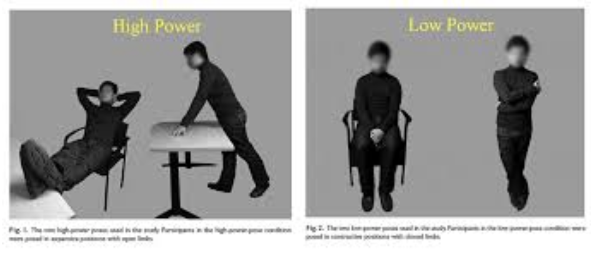
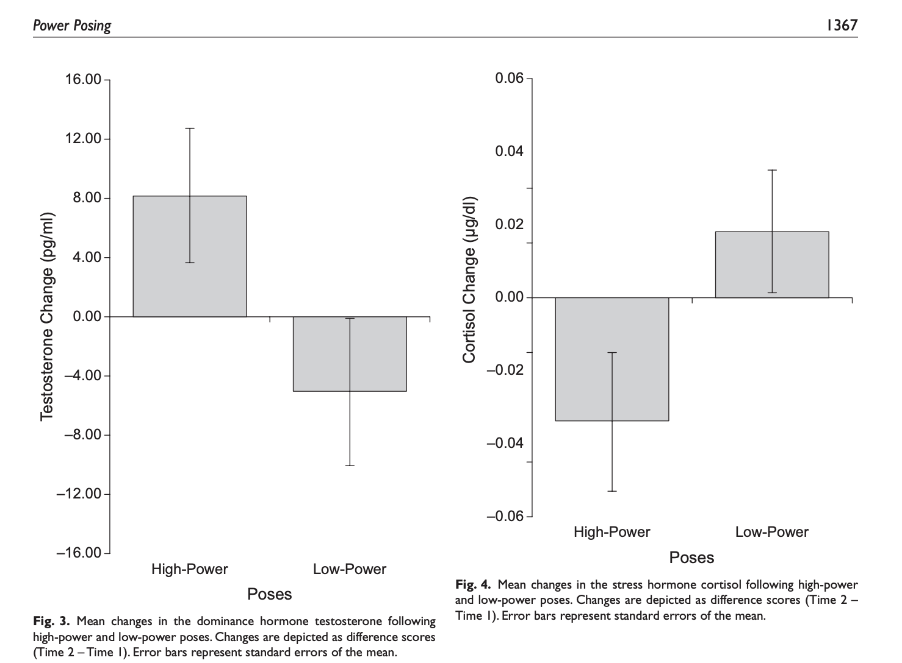
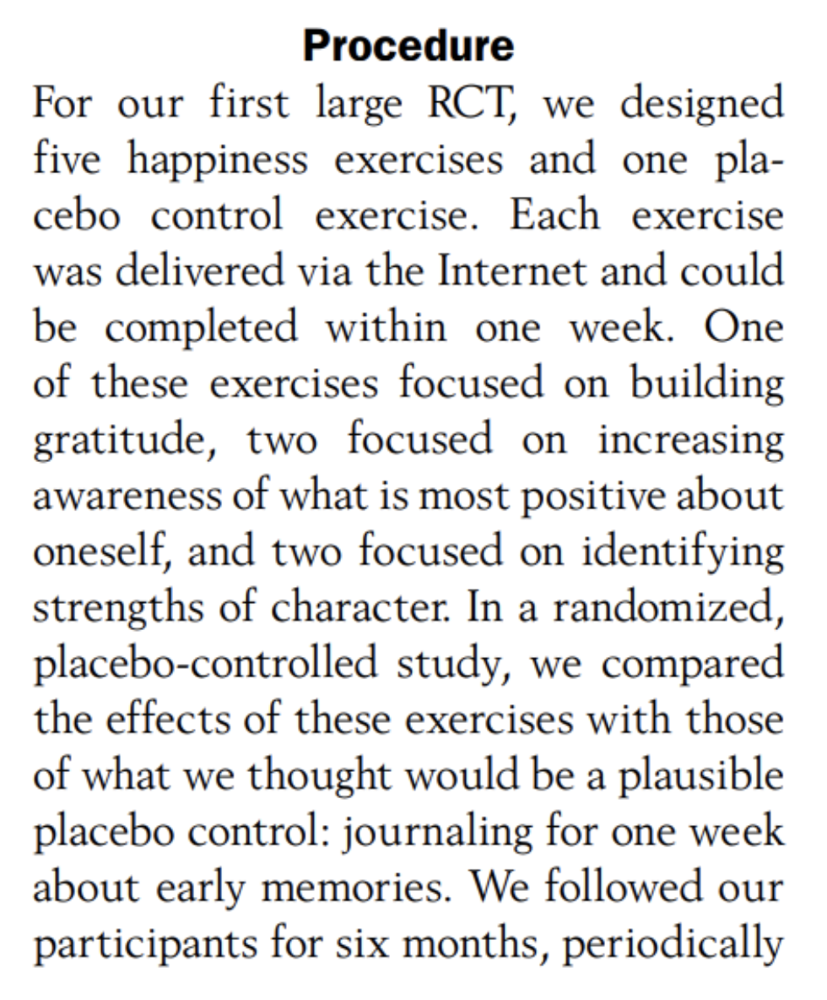
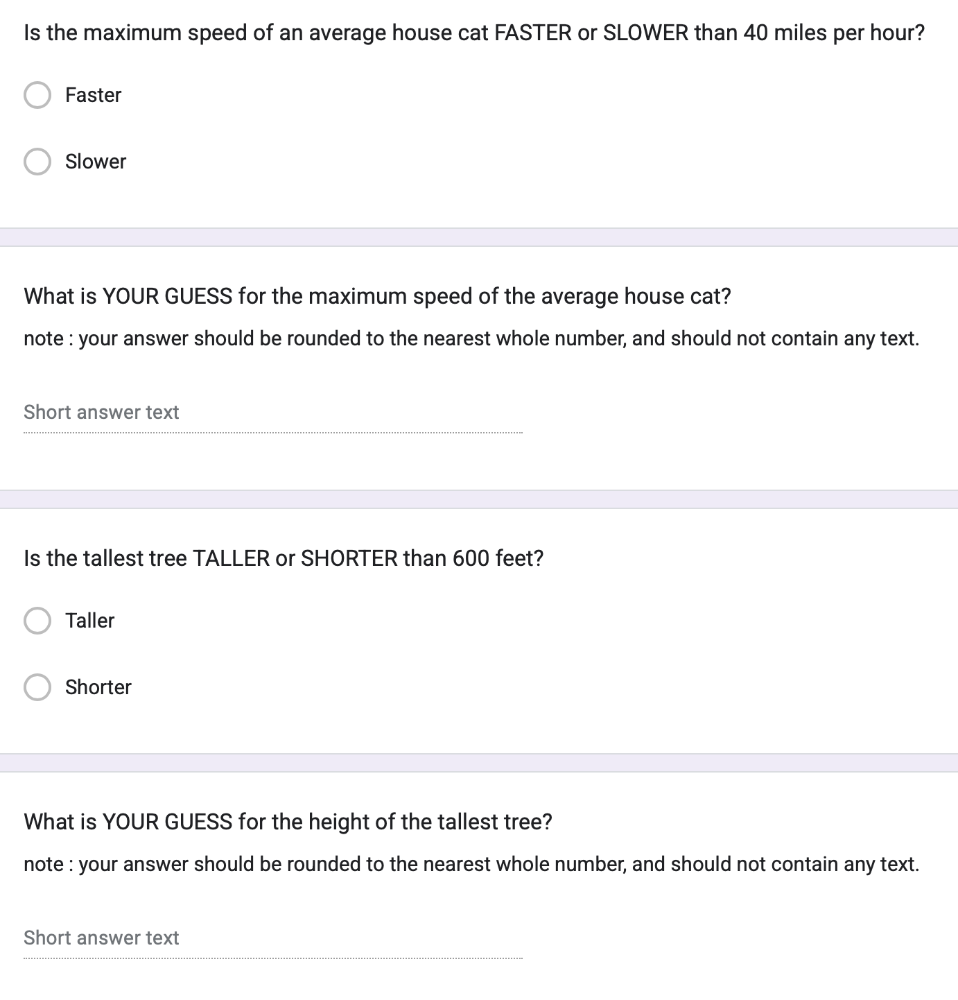
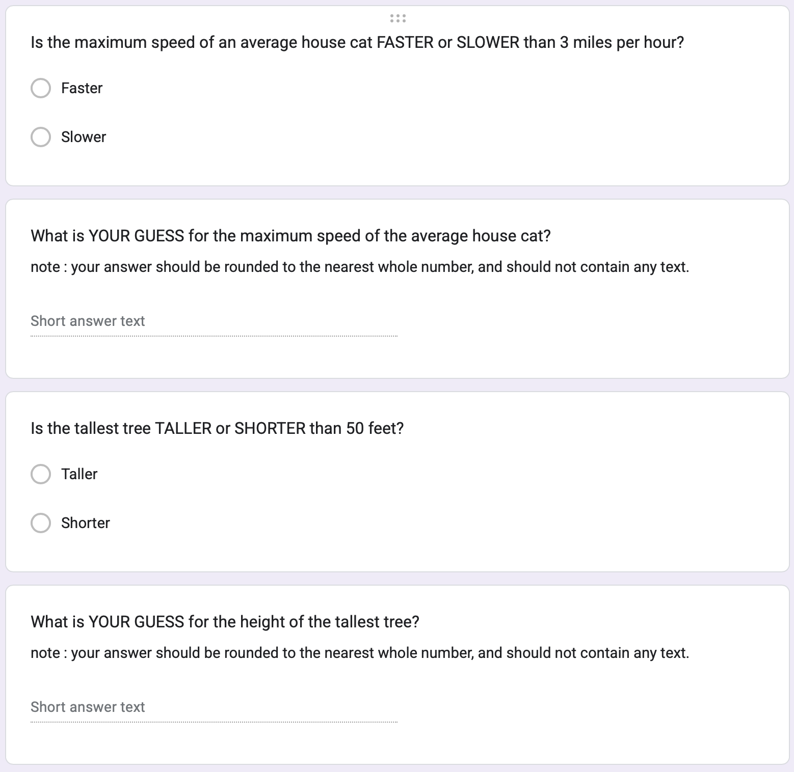
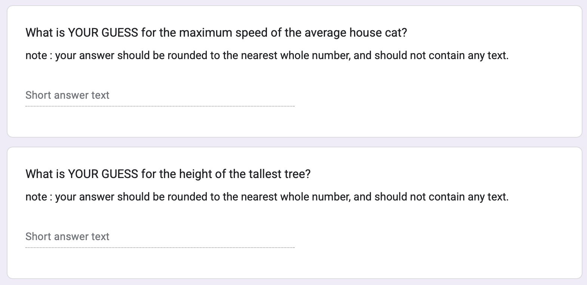
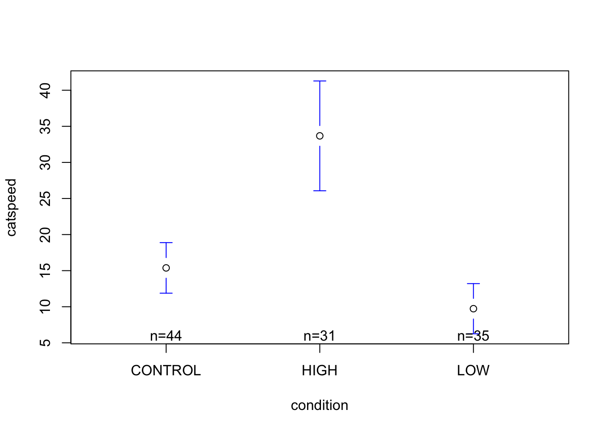

mod <- lm(SWLS ~ call.folks, data = m)
round(coef(mod), 2) (Intercept) call.folksYes
3.26 0.12 Hi class! It’s me, your professor. In text format. These are words that I wrote; are you hearing my voice in your head? In any case, thanks for your patience and flexibility; it is much appreciated (and needed).
Here’s a short video where I say hi and go over this document.
Before next Friday (4/11) please complete the following.
There are three parts to this lecture document; I think this document will take an average of 60 minutes to complete (sd = 30 minutes?) so please plan accordingly.
I’m looking forward to seeing everyone again on Friday, April 11th. Let me know if you have questions or comments on the Discord. Take care!
:Prof.
Professor wanted to see if calling your parents / guardians was related to having a more satisfied life. He analyzed data from the mega dataset, and defined the linear model below (satisfaction with life ~ call.folks (yes / no) + error. Use the following output to answer the check-in questions (submit answers to the link above).
When you are done, watch the video below to see a review of the answers. Yes, you can just watch the video (or submit nothing) but trying on your own is the point!
Here’s a link to the R Script professor used to generate the model / the key.
The manipulation is when researchers create multiple groups (experimental and / or control conditions) and change ONE THING about a person’s experience in each group, and then observe the outcome. The change that experimenters make to the conditions is a source of variation (the independent variable), and the outcome is the dependent variable.
KEY IDEA : the control / comparison group matters! In drug studies, the control group is clear. However, in other contexts what a “good control” is much harder to define, and researchers can be a little misleading (or biased) when creating the control and experimental groups. So it’s an important skill to think about the control condition, and whether it’s a fair comparison.
For example, let’s say I wanted to test whether attending a 3-hour statsiticss and research methods lecture decreases student boredom. What’s the control condition here?
This example may seem obvious, but thinking through what the experimental / control conditions are can yield surprising results.
Watch the video below, where I walk through two famous studies that have difficult control conditions.


Article : Seligman, M. E., Steen, T. A., Park, N., & Peterson, C. (2005). Positive psychology progress: empirical validation of interventions. American psychologist, 60(5), 410.

Below are the three versions of the study that students saw in Week 7. Do you remember which condition you were in? Could you tell that you were in an experiment??
| High Condition | Low Condition | Control Condition |
|---|---|---|
|  |  |  |
Below are examples of how the anchoring study was an example of an experiment.
| Key Term and Definition | Example in the Anchoring Study |
| outcome = THE DV = what was being measured after the manipulation? | The person’s own answer to the specific question (i.e., their idea about the speed of a cat, the height of a tree, and the amount of meat eaten.) |
| manipulation = THE IV = what were ALL the things that the researcher changed about a person’s experience (across experimental conditions)? | The context given before the person provided their own answer was manipulated; there were three groups :
Everything else was the same across the conditions; the font was the same; the types of questions was the same; the wording was the same; the color was the same; etc. |
| random assignment = were all possible confound variables balanced across conditions? | I’ll show evidence of random assignment in the lecture video that supports these notes. There was one variable that was not randomly assigned - the month you were born in was used to assign people to one of the three groups (Google forms does not have a built-in random assignment feature.) For example, people in the HIGH condition were all born between January and April. |
| double-blind = did the study avoid demand characteristics (where experimenter might have influenced behavior when giving the study) & placebo effects (where participants might have acted in a certain way because they knew they were being experimented on)? | The google form didn’t really change its behavior when assigning people to one group or another; we can say that it was blind to the participants’ condition because it is a computer. The participants may or may not have been blind to the study condition; I didn’t advertise this was an experiment, you were supposed to do the survey on your own (“no talking with your buddy”) and we hadn’t yet done (or learned) about experiments yet. Still, I imagine there’s some amount of skepticism among students that may have influenced the results. This lowers the external validity / generalizability of the study somewhat. (However, we gain a lot of power in being able to control people’s experience with this study.) |
| generalizability = did the study have external validity? what was the effect size (\(R^2\))? | It’s unclear how questions about cat speeds, tree heights, and meat consumption are relevant to the real world. But as I describe in the video, this study was partially responsible for the researchers’ winning the Nobel Prize….in economics. For what it’s worth, I’ve seen this study replicate in every. single. semester. over the last….8 years? I’ve been using this as an example. It’s a very reliable effect; and has a fairly large \(R^2\) value. |
| ethics = should researchers do this type of study? (Predict & Control) | Curious your thoughts! Did you think this research is ethical??? |
Question : Will the number that people see BEFORE making their own rating influence their decision?
Theory : Which pattern in the data do you expect to observe? Vote on Discord BEFORE analyzing the data / watching the video (or not.)
Linear Models (DV ~ IV). To test this theory, we will need to define three separate linear models.
cat speeds ~ condition
tree heights ~ condition
meat consumption ~ condition
Data : Download the “anchor_SP25.csv” dataset here. These data were collected
Watch the video tutorial below, where I walk through how to test the researchers’ question (does the number that people see before making their own rating influence their own rating?)
Attaching package: 'gplots'The following object is masked from 'package:stats':
lowessanchor <- read.csv("~/Dropbox/!WHY STATS/Class Datasets/anchorSP25.csv", stringsAsFactors = T)
anchor$catspeed[anchor$catspeed > 100] <- NA
#### Define and Graph the Linear Model
cat.mod <- lm(catspeed ~ condition, data = anchor)
plotmeans(catspeed ~ condition, data = anchor, connect = F)
(Intercept) conditionHIGH conditionLOW
15.379545 18.297874 -5.650974 [1] 0.3169796Use the “anchor_SP25.csv” dataset to test whether the experimental manipulation influenced people’s judgments about how tall trees were, and how much meat the average american would eat.
Note that the variables treeheight and meateat have outliers. Remove outliers for these variables based on the following rules:
treeheight : any response greater than 1000 ft (the height of a 10-story building)
meateat : any response greater than 1095 (which would be the average american eating three pounds of meat per day, every day for a year.)
Then, define two linear models (model 1 = treeheight ~ condition; model 2 = meateat ~ condition), and use these models to answer the questions below. Round to the nearest whole number (no decimal places).
Feeling stuck? Here’s a video where I walk through the code you’ll need.
Thanks for reading and watching. Complete this check-out
Carney, D. R., Cuddy, A. J., & Yap, A. J. (2010). Power posing: Brief nonverbal displays affect neuroendocrine levels and risk tolerance. Psychological science, 21(10), 1363-1368. link to article + link to summary of non-replication↩︎